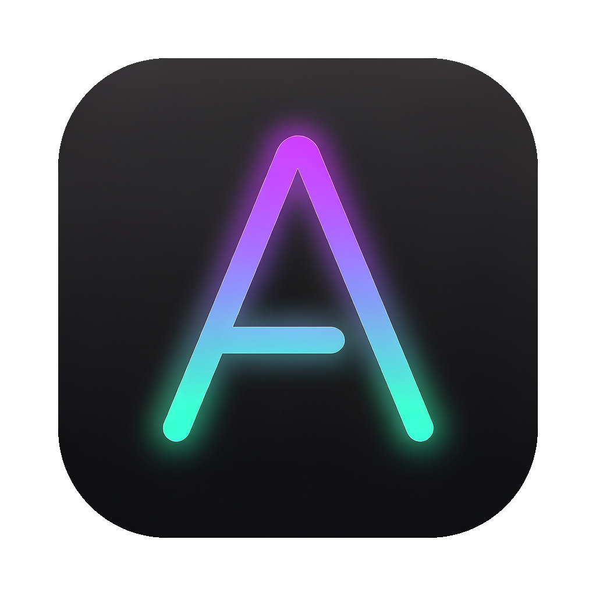

模型服务已连接

服务器助手
/
新任务
清空对话
AGENTDESK WORKSPACE
今天想让 Agent
帮你完成什么？
连接你的服务器，查看系统状态和运行信息。
工作空间
当前模型
⌄
↑
发送
工作空间
当前模型
⌄
↑
发送
PREFERENCES
设置
调整工作台的主题和背景，设置只保存在当前电脑。
主题
选择工作台的基础配色。
暗夜 · 默认
晨白
背景图片
上传一张本地图片作为工作台背景。
选择图片
恢复默认
尚未选择背景图片
背景图透出程度
数值越低，背景越沉稳，内容越清晰。
55%
模型管理
添加、修改或删除模型配置；保存后立即生效。密钥保存在本机 .env。
添加模型
保存全部
正在读取模型配置…
服务器管理
维护服务器助手连接的机器；保存后立即生效。
添加服务器
保存全部
正在读取服务器配置…
设置会自动保存到本机。